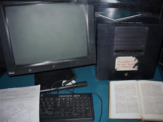

Tim Berners-Lee
Publicado el · Fuente: Wikipedia

Timothy «Tim» John Berners-Lee (Londres, Inglaterra; ) es un científico de la computación británico, conocido por ser el padre de la World Wide Web. Estableció la primera comunicación entre un cliente y un servidor usando el protocolo HTTP en diciembre de 1990. En octubre de 1994 fundó el Consorcio de la World Wide Web (W3C) con sede en el MIT para supervisar y estandarizar el desarrollo de las tecnologías sobre las que se fundamenta la Web.
Él y su grupo crearon el lenguaje HTML, el protocolo HTTP y el sistema de localización de objetos en la web URL. Muchas de sus ideas ya aparecían en el proyecto Xanadú de Ted Nelson y en el memex de Vannevar Bush.
Biografía
Nació en el sudoeste de Londres el . Sus padres, Conway Berners-Lee y Mary Lee Woods, eran matemáticos y formaron parte del equipo que construyó el Manchester Mark I; se habían conocido en el proyecto del Ferranti Mark I, el primer ordenador comercial con programa almacenado.
Estudió en la escuela primaria Sheen Mount y en el Emanuel School de Londres. Entre 1973 y 1976 cursó Física en el Queen's College de la Universidad de Oxford, donde obtuvo un título de primera clase. En 1978 trabajó en D. G. Nash Limited, donde escribió un sistema operativo.
Desarrollo de su carrera
Primera etapa en el CERN
Trabajó en el CERN de junio a diciembre de 1980. Durante ese tiempo propuso un proyecto basado en el hipertexto para compartir información entre investigadores y construyó un programa llamado ENQUIRE. Tras pasar por Image Computer Systems Ltd., regresó al CERN en 1984.
El nacimiento de la World Wide Web

En 1989, el CERN era el nodo de Internet más grande de Europa y Berners-Lee vio la oportunidad
de unir Internet y el hipertexto. Presentó su primera propuesta el
y, con la ayuda de Robert Cailliau, una
revisión en 1990 que fue aceptada por su gerente, Mike Sendall. Diseñó el primer
navegador (WorldWideWeb, desarrollado con NEXTSTEP) y el primer servidor web, httpd.
El primer servidor web se puso en línea el . Como el software se liberó gratuitamente, su difusión fue muy rápida:
| Fecha | Servidores web |
|---|---|
| 1 | |
| 26 | |
| 200 |
El MIT y el W3C
En 1994 entró en el Laboratorio de Ciencias de la Computación e Inteligencia Artificial del MIT y puso en marcha el W3C, que decidió que todos sus estándares fuesen libres y sin coste. En su libro Tejiendo la red (1999) explica por qué la tecnología web es libre y gratuita. Fue uno de los pioneros a favor de la neutralidad de red.
Proyectos actuales
Berners-Lee fue crítico con las expectativas generadas alrededor de la Web 2.0: en su opinión no se trataba de una nueva generación de la web, sino de una forma diferente de desplegar aplicaciones sobre la misma plataforma. Desarrolló el concepto de intercreatividad, considerado un aspecto vital del futuro de la web.
Desde 2001 trabaja en el proyecto de la web semántica, que pretende crear un medio universal para el intercambio de información significativa, comprensible para las máquinas. Es presidente del Open Data Institute, que cofundó con Nigel Shadbolt en 2012.
Controversia sobre nombres de dominio
Se opuso a la creación de dominios como «.mobi», argumentando que todo el mundo debería acceder a las mismas webs, independientemente de si usa un ordenador o un móvil. Defiende que los nombres de dominio sean un recurso público, aunque considera más importantes los estándares abiertos de vídeo, codificación y comunicación de datos.
Publicaciones
Ha publicado artículos en revistas como Nature o Scientific American.
Libros
- Berners-Lee, T.; Fischetti, M. (1999). Weaving the Web. Orion Business. ISBN 0-7528-2090-7.
- Berners-Lee, T.; Hall, W.; Hendler, J. A. (2006). A Framework for Web Science. Now Publishers. ISBN 1-933019-33-6.
Artículos destacados
- (1994) Universal Resource Identifiers used in the World Wide Web (RFC 1630).
- Con J. Hendler y O. Lassila (2001). «The Semantic Web». Scientific American, 29–37.
- Con C. Bizer y T. Heath (2009). «Linked Data – The Story So Far». IJSWIS, 5(3): 1–22.
- (2010). «Long Live the Web». Scientific American.
Reconocimientos
| Año | Distinción | Tipo |
|---|---|---|
| 1996 | Doctor honoris causa por la Universidad de Southampton | Académico / honorífico |
| 1997 | Oficial de la Orden del Imperio Británico | |
| 2002 | Premio Príncipe de Asturias de Investigación Científica y Técnica | Premio |
| Premio del festival de tecnología de Telluride | ||
| 2004 | Premio de Tecnología del Milenio | |
| Knight Commander de la Orden del Imperio Británico | Honorífico | |
| 2009 | Doctor honoris causa por la Universidad Politécnica de Madrid | Académico |
| 2013 | Queen Elizabeth Prize for Engineering | Premio |
| 2017 | Premio Turing 2016 |
Además, el asteroide (13926) Berners-Lee lleva su nombre desde el .